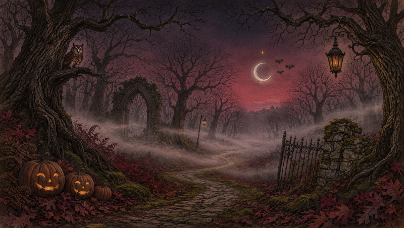

The moon is like a scimitar,
A little silver scimitar,
A-drifting down the sky.
And near beside it is a star,
A timid twinkling golden star,
That watches like an eye.
And through the nursery window-pane
The witches have a fire again,
Just like the ones we make,
And now I know they're having tea,
I wish they'd give a cup to me,
With witches' currant cake.